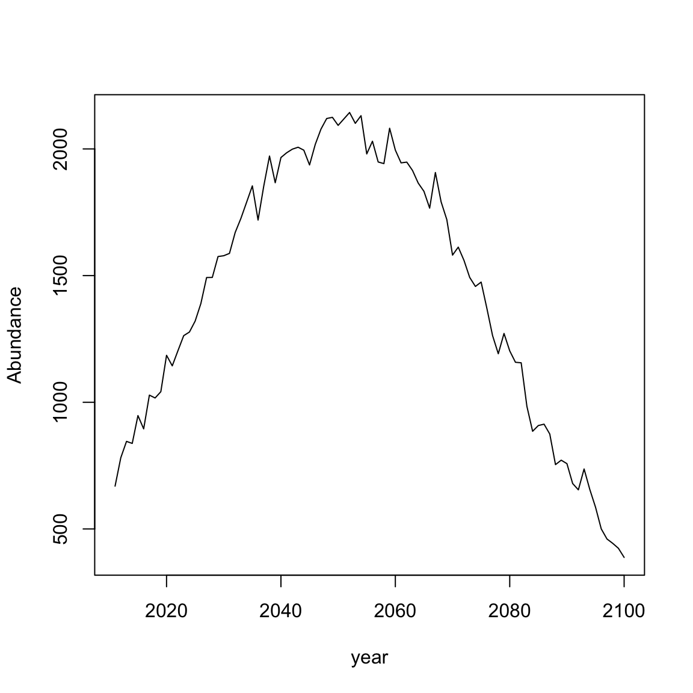

Run_OM.RmdThe simulation functions are
SimulateWorld() Use ?SimulateWorld to read documentationSimulateWorld_ROMS()SimulateWorld_ROMS_TrophicInteraction()SimulateWorld()
First load the WRAP library.
library(WRAP)
This function simulates presence and abundance using a simulated temperature field. Parameters for the function are
abund_enviro can be “lnorm_low” (SB); “lnorm_high” (EW); or “poisson” (JS).PA_shape can be “logistic” (SB); “logistic_prev”,“linear” (JS)temp_spatial can be “simple” (SB); or “matern” (EW)temp_diff is only for the simulated temperature. It specifies min and max temps at year 1 and year 100 (e.g. temp_diff=c(1,3,5,7) means year 1 varies from 1-3C and year 100 from 5-7C).The defaults are temp_diff = c(1, 3, 5, 7), temp_spatial = "simple", PA_shape = "logistic", and abund_enviro = "lnorm_low". You can also set number of years, grid size, and start year.
sim <- SimulateWorld()
sim (the output from a simulation function) is class “OM” and is a list. It has the simulated grid in grid and information about the simulation in meta. Typing the name of the output will print basic information about the simulation.
sim ## Simulated species abundance and suitability from WRAP version 1.2 and function SimulateWorld ## covariates: temp ## grid.dimensions: 20, 20, 400 (nrow, ncol, cells) ## grid.resolution 1, 1 (x, y) ## grid.extent 1, 20, 1, 20 (xmin, xmax, ymin, ymax) ## grid.units: not applicable ## time.extent: 2001:2100 year
Since simulations take a long time to run, you may want to create a directory in your working directory for the simulations and save them there. Then you can reload the simulations instead of re-running.
Create a directory for the simulations:
if(!dir.exists(file.path(here::here(), 'Sim1'))) dir.create(file.path(here::here(), 'Sim1'))
Save the simulation.
Plot time-series of total catch in observed years
data <- sim$grid plot(aggregate(abundance~year, data[data$year<=2010,], FUN="sum"),type="l",ylab="Abundance")
plot time-series of total catch in forecast years
data <- sim$grid plot(aggregate(abundance~year,data[data$year>2010,], FUN="sum"),type="l", ylab="Abundance")

library(raster) df <- subset(sim$grid, year==2001) df <- df[, c("lon", "lat", "abundance")] dfr <- raster::rasterFromXYZ(df) plot(dfr)
Show 4 years and remove the box and legend.